PROJECTS
工程實績
廠房、倉儲、辦公大樓、住宅與特殊造型鋼構。
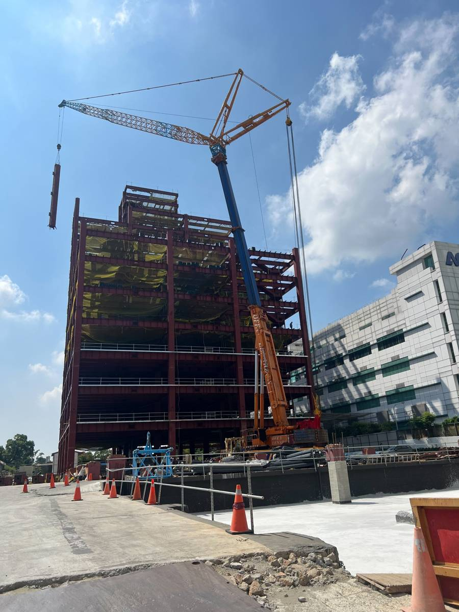
富創得科技廠辦大樓
新北市林口區｜業主：宜佳營造7,144 噸
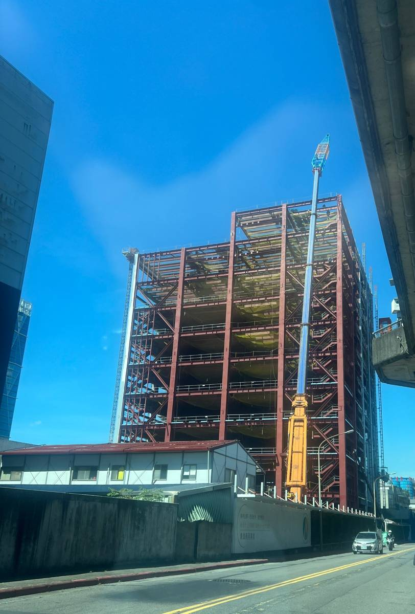
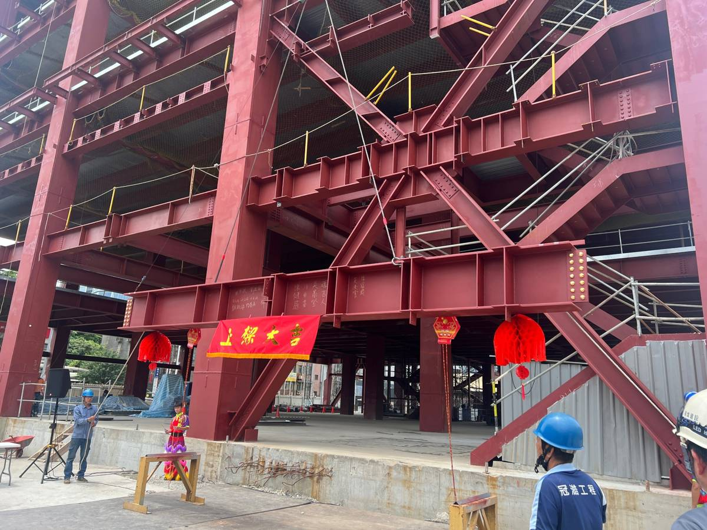
點擊看下一張 ⇄內湖潭美鋼構工程
台北市內湖區｜業主：東煒建設6,110 噸
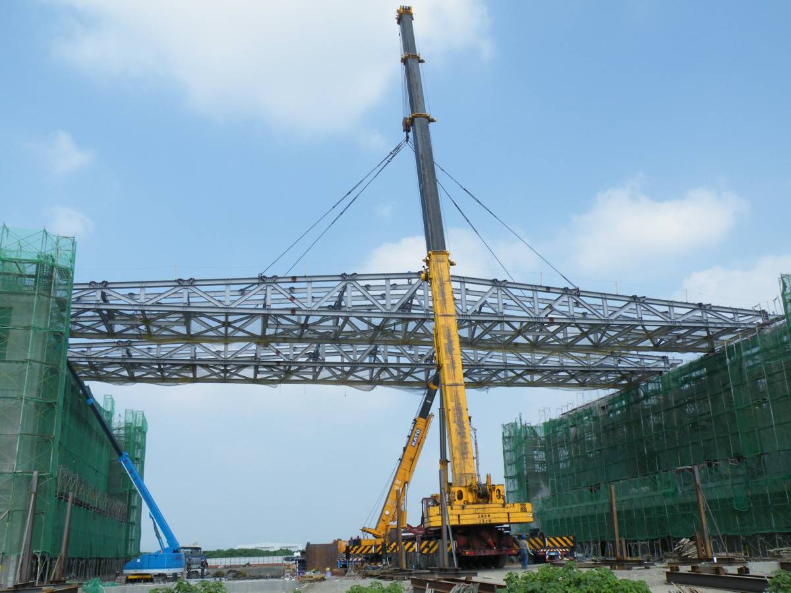
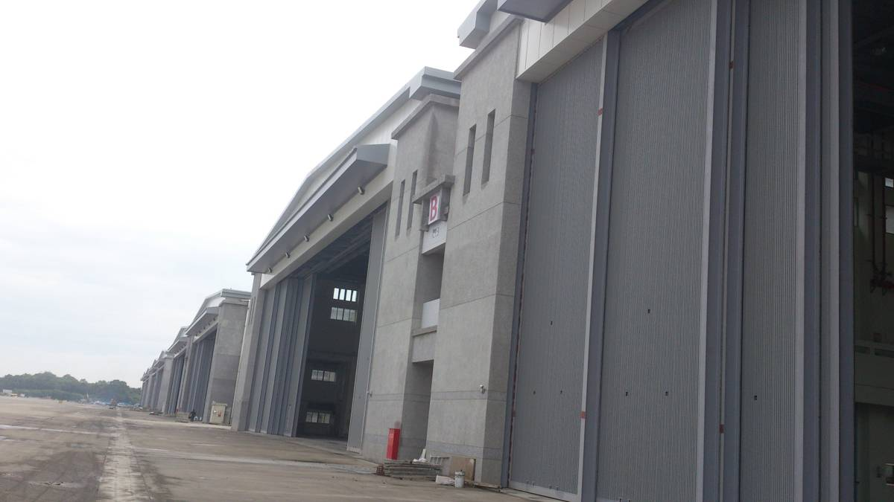
點擊看下一張 ⇄空軍水湳機場遷建工程－屏南營區
屏東縣屏東市｜業主：星能6,000 噸
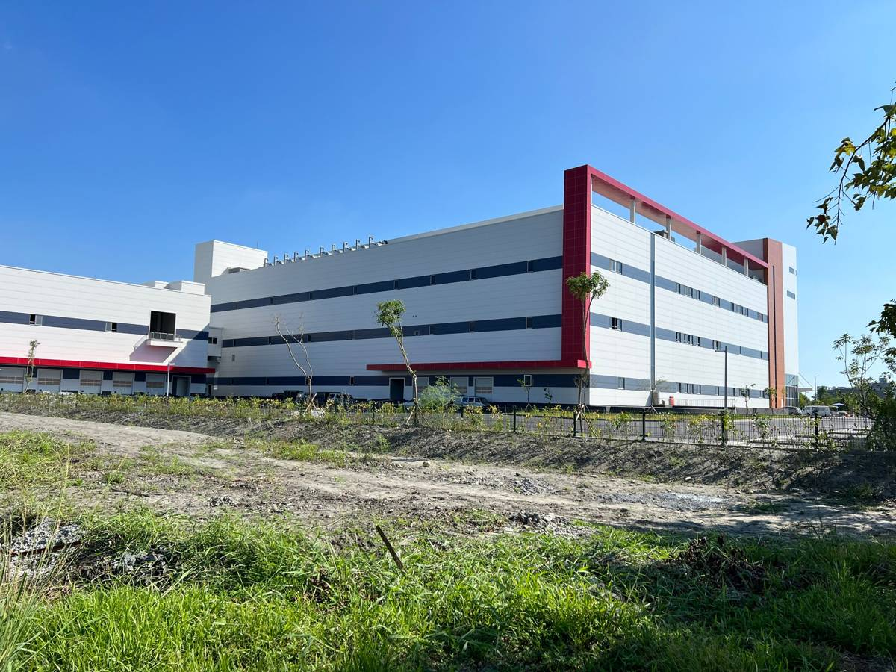
 點擊看下一張 ⇄
點擊看下一張 ⇄邦特生物科技宜科廠
宜蘭縣宜蘭市｜業主：豐譽聯合工程5,813 噸
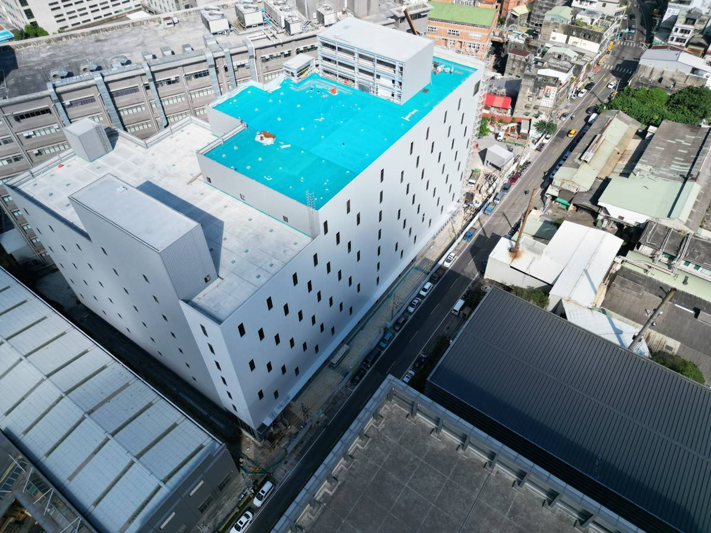
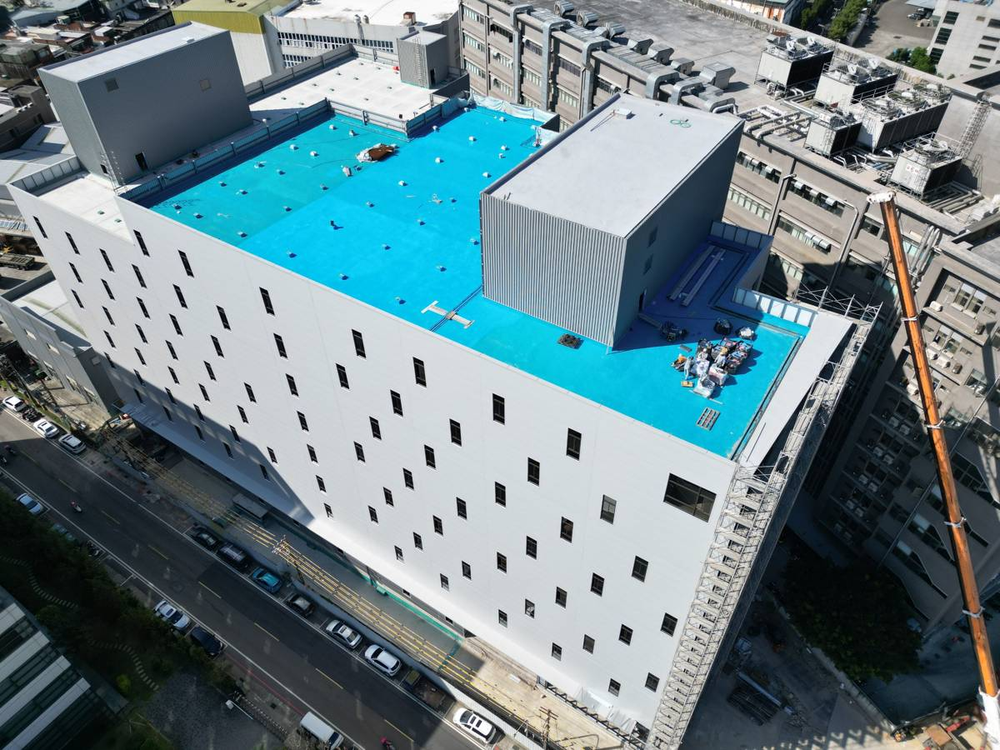
點擊看下一張 ⇄六東織造廠辦大樓
桃園市龜山區｜業主：豐譽聯合工程3,723 噸
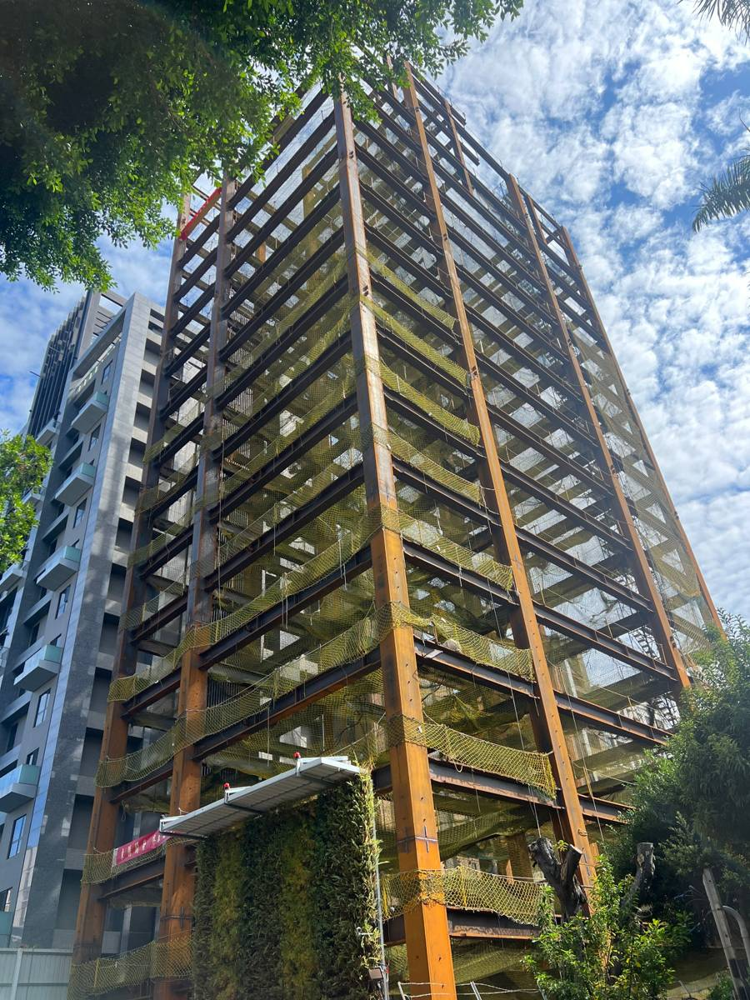
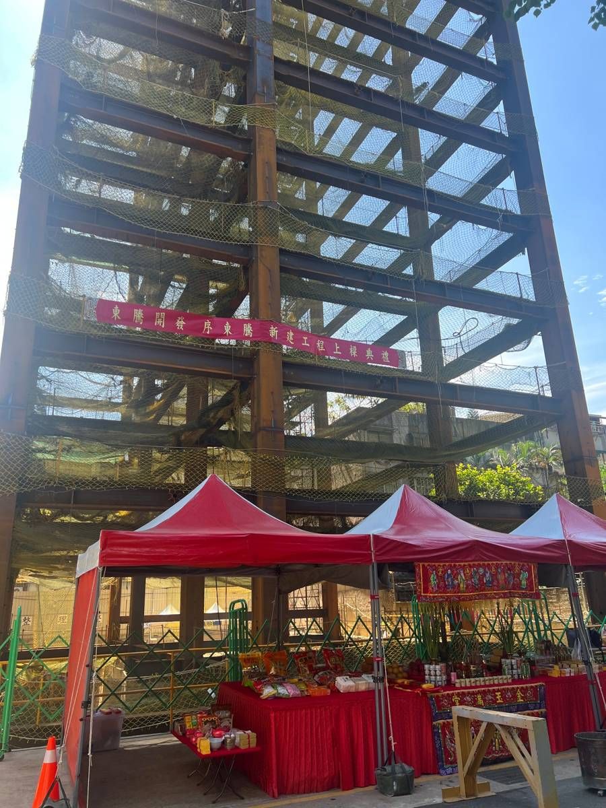
點擊看下一張 ⇄東騰中山區長安段三小段住宅
台北市中山區｜業主：東騰開發1,223 噸
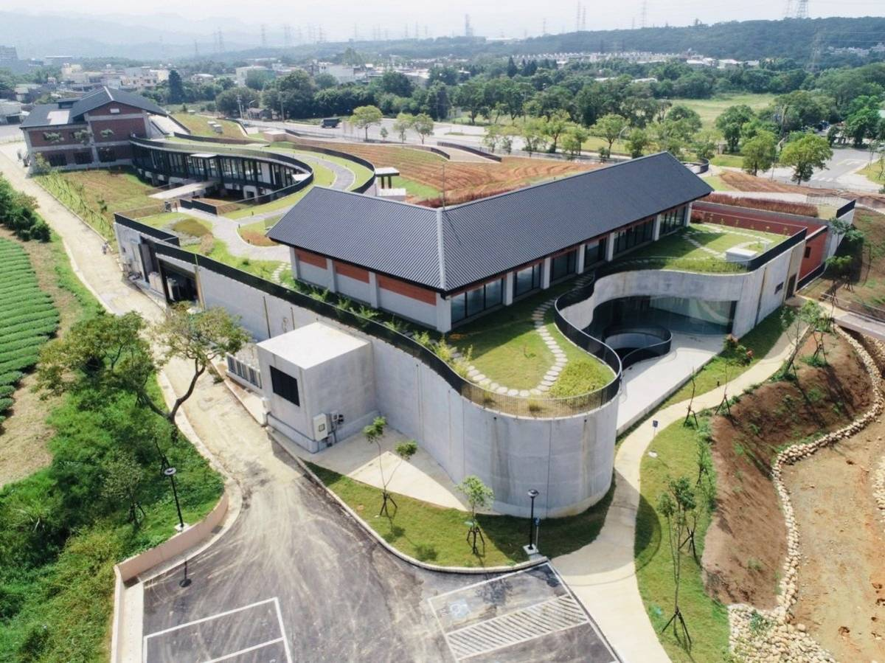
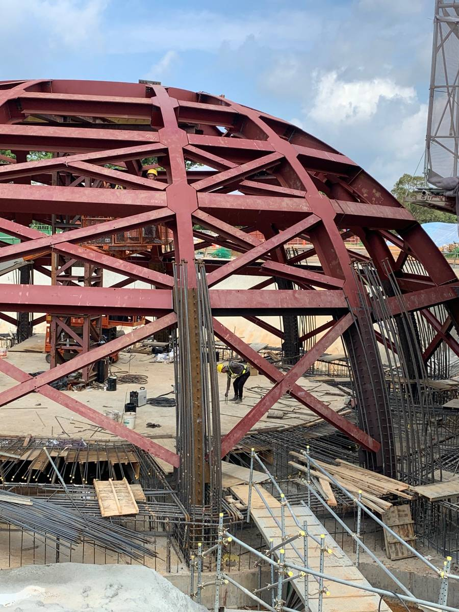
點擊看下一張 ⇄台灣客家茶文化館暨周邊景觀工程
桃園市龍潭區｜業主：直佑營造1,670 噸
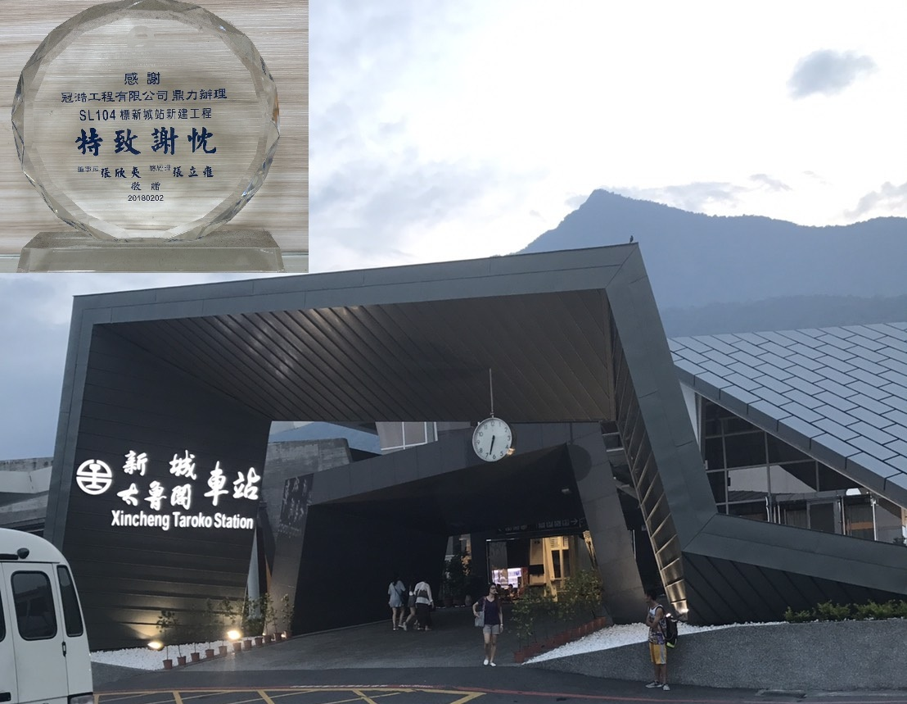
SL104標新城站新建工程
花蓮縣｜業主：安倉營造造型鋼構
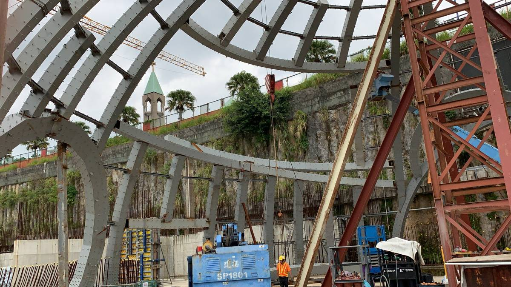
金寶山
新北市金山區｜造型鋼構
實績一覽
| 工程名稱 | 地點 | 業主 | 承包項目 | 噸數 |
|---|---|---|---|---|
| 富創得科技廠辦大樓－鋼構工程 | 新北市林口區 | 宜佳營造 | 鋼構工程 | 7,144 噸 |
| 內湖潭美－鋼構工程 | 台北市內湖區 | 東煒建設 | 鋼構工程 | 6,110 噸 |
| 空軍水湳機場遷建工程－屏南營區 | 屏東縣屏東市 | 星能 | 鋼構及機棚大門工程 | 6,000 噸 |
| 邦特生物科技宜科廠新建工程 | 宜蘭縣宜蘭市 | 豐譽聯合工程 | 鋼構工程 | 5,813 噸 |
| 桃園長發段倉儲新建工程 | 桃園市大園區 | 東煒建設 | 鋼構工程 | 4,048 噸 |
| 六東織造廠辦大樓新建工程 | 桃園市龜山區 | 豐譽聯合工程 | 鋼構工程 | 3,723 噸 |
| 國紡企業廠房新建工程 | 雲林縣斗六市 | 豐譽聯合工程 | 鋼構工程 | 3,598 噸 |
| 安捷企業廠房新建工程 | 桃園市龍潭區 | 豐譽營造 | 鋼構工程 | 3,320 噸 |
| 嘉韡工業廠房新建工程 | 桃園市中壢區 | 豐譽營造 | 鋼構工程 | 2,571 噸 |
| 米格國際 lativ 物流中心新建廠房工程 | 桃園市八德區 | 豐譽營造 | 鋼構製裝工程 | 2,200 噸 |
| 金泰段辦公大樓－鋼構工程 | 台北市大直區 | 禾華營造 | 鋼構工程 | 2,098 噸 |
| 華城觀音1.5代廠廠房增建工程 | 桃園市觀音區 | 宜佳營造 | 鋼構工程 | 1,780 噸 |
| 嘉聯益觀音廠改建工程 | 桃園市觀音區 | 直佑營造 | 鋼構工程 | 1,700 噸 |
| 台灣客家茶文化館暨周邊景觀工程 | 桃園市龍潭區 | 直佑營造 | 鋼構工程 | 1,670 噸 |
| 大園旺德廠辦新建工程 | 桃園市大園區 | 德寶營造 | 鋼構工程 | 1,545 噸 |
| 東騰中山區長安段三小段住宅 | 台北市中山區 | 東騰開發 | 鋼構工程 | 1,223 噸 |
| 暖江橋改建工程－陸橋 | 基隆市暖暖區 | 安倉營造 | 造型鋼構工程 | — |
| SL-104 新城站新建工程 | 花蓮縣新城鄉 | 安倉營造 | 造型鋼構工程 | — |
| 台九線 246K 馬太鞍溪橋改建工程 | 花蓮縣 | 安倉營造 | 鋼模製造 | 170 噸 |